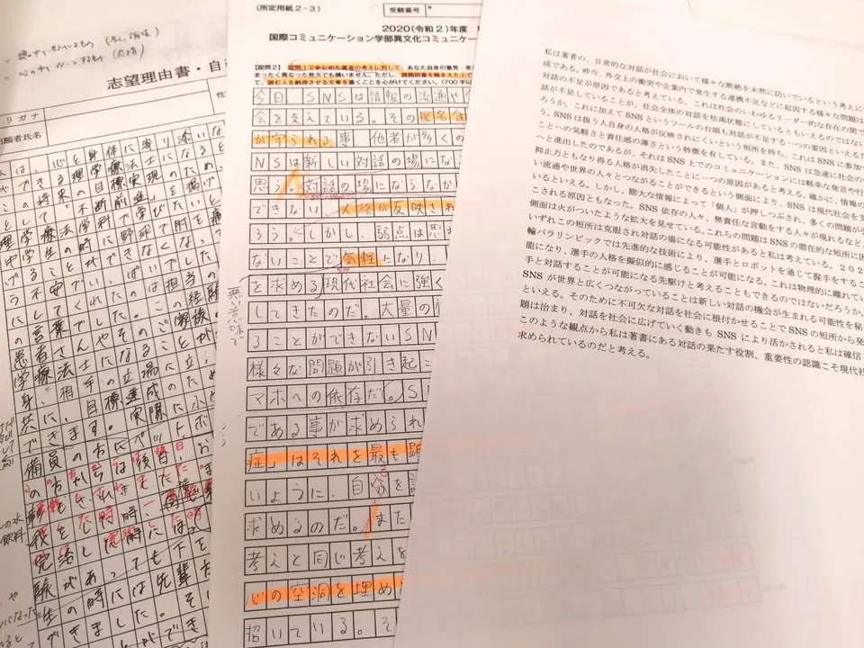
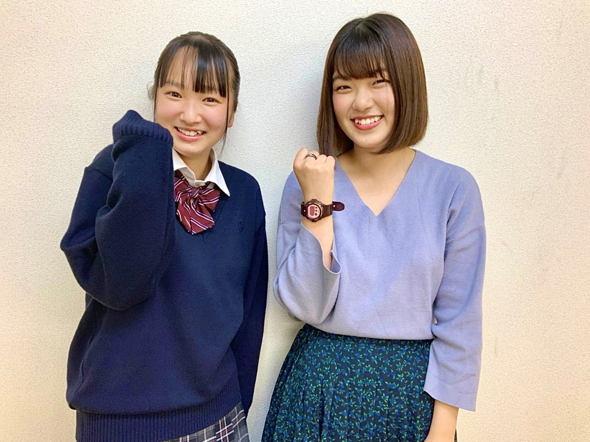
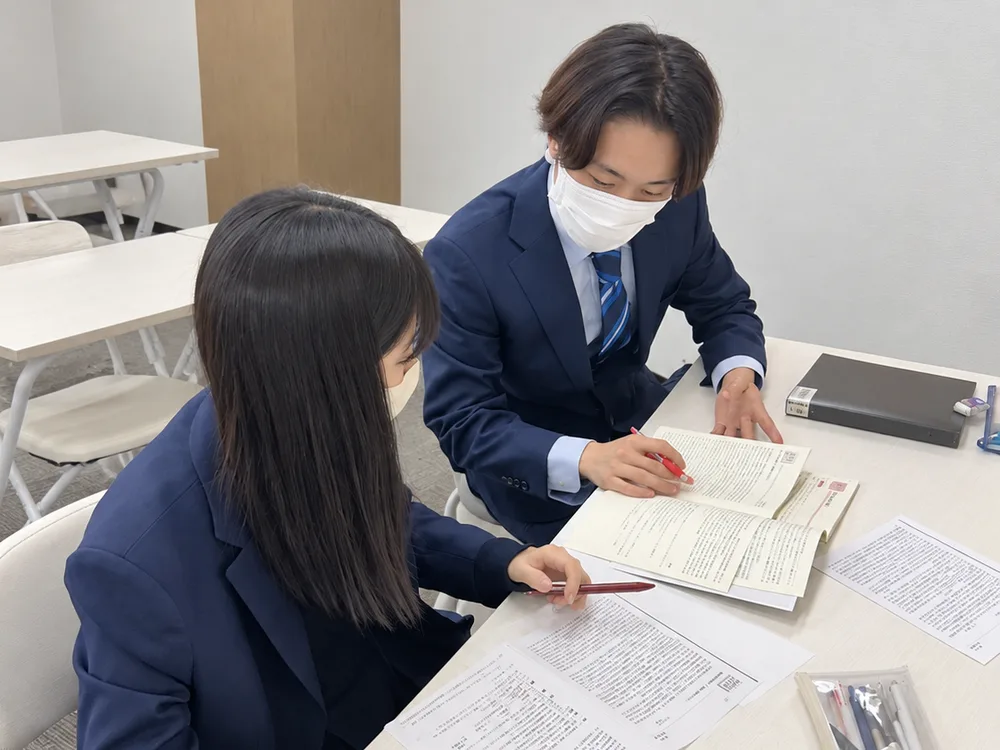
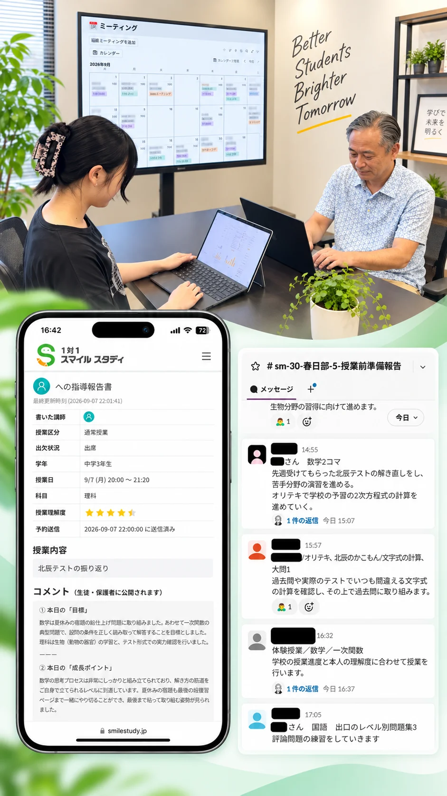
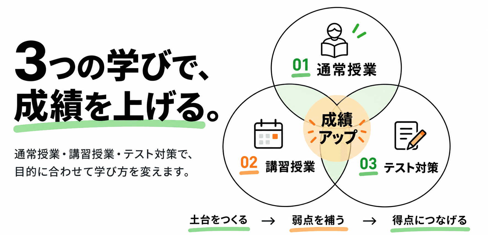

目標点から逆算し、やることを絞る
定期テスト、Vもぎ・北辰テスト、志望校から逆算し、お子様にとって本当に点数につながる単元を見極めます。
ONE TO ONE SMILE STUDY KIYOSE
その理由は、
完全 1 対 1だから、伸びしろを見逃さない。1 対 1 スマイルスタディ清瀬校は、春日部校で培ってきた指導哲学と合格戦略をもとに、お子様の学力・性格・目標に合わせて、本当に必要な学習を設計する完全 1 対 1 個別指導塾です。
FOR PARENTS
家で勉強しない。数学のどこから戻ればいいか分からない。英語が単語暗記だけで止まっている。部活が忙しくて、勉強時間が取れない。そんなとき、必要なのは“もっと量を増やすこと”ではなく、お子様の現在地を正しく見ることです。
家でまったく勉強しない
数学のどこから戻ればいいか分からない
英語が単語暗記だけで止まっている
部活が忙しく、勉強時間が取れない
志望校や受験の作戦が決まらない
塾に通っているのに成果が見えない
OUR PHILOSOPHY
スマイルスタディが大切にしているのは、お子様の夢や目標を叶える応援をすることです。たとえ入塾前の成績がどんな状態であっても、どこまでも可能性を信じて、成績アップと志望校合格を講師全員で支えます。
全部やらない。だから、点数が上がる。

OUR APPROACH
同じ“数学が苦手”でも、原因は一人ひとり違います。計算で止まっているのか、図形なのか、証明なのか、文章題なのか。スマイルスタディでは、最初に現在地を丁寧に見極めます。
直近のテスト・学校ワークを確認
現在の得点や解答のクセから、お子様の学習状況を客観的に把握します。
どこで止まっているかを診断
計算・図形・証明・文章題など、つまずきの種類を具体的に見極めます。
目標点・志望校から逆算
ゴールから逆算し、今の時期に必要な学習範囲を明確にします。
取る問題・今は追いすぎない問題を決定
全部をやるのではなく、点数につながる問題を優先して選びます。
完全 1 対 1 で必要な単元だけを集中指導
決めた範囲を、お子様のペースに合わせて丁寧に積み上げます。
THREE REASONS

定期テスト、Vもぎ・北辰テスト、志望校から逆算し、お子様にとって本当に点数につながる単元を見極めます。

1 対 2 ・ 1 対 3 では、先生が別の生徒様を見ている時間があります。完全 1 対 1 なら、手が止まった瞬間に気づき、その場で戻れます。
授業後はComiruで学習内容・宿題・次回方針を共有。授業をして終わりではなく、ご家庭にも見える形で伴走します。
MANAGEMENT SYSTEM
授業をして終わりではありません。お子様の状況を、教室全体で見えるようにします。
スマイルスタディでは、授業報告、面談記録、指導方針、日程管理を仕組み化しています。担当講師だけに任せきりにせず、教室全体で生徒様の状況を把握し、必要に応じて方針を見直します。
これは、管理者のための仕組みではありません。
お子様の伸びと、保護者様の安心のための仕組みです。

THREE PILLARS
ただ授業を増やすのではなく、目的に合わせて学び方を変えます。

日々の学習の土台をつくる授業です。学校の進度、苦手単元、目標点に合わせて、完全 1 対 1 で必要な学習を積み上げます。
春期・夏期・冬期など、まとまった期間で苦手克服や先取り、受験準備を進める授業です。
通常授業だけでは補いきれない単元を、お子様ごとに設計します。
定期テストやVもぎ・北辰テストなど、目標が明確なテストに向けて、得点につながる単元に絞って対策します。
目標点から逆算し、取るべき問題を見極めます。
日々の通常授業で土台をつくり、講習授業で弱点を補い、テスト対策で得点につなげる。
ABOUT KIYOSE
1 対 1 スマイルスタディ清瀬校は、清瀬駅前に 2026 年 11 月プレオープン、 12 月完全オープン予定です。春日部校で培ってきた完全 1 対 1 指導のノウハウ、合格戦略、教室運営の仕組みをもとに、清瀬地域の生徒様・保護者様に安心して通っていただける教室を目指して準備を進めています。
近くの中学校の生徒様、大歓迎です。
清瀬駅周辺の中学校から通いやすい場所にあります。通っている学校の教科書やテスト範囲に合わせて、定期テスト対策から高校受験まで一緒に進めます。
距離は教室からの目安です。上記以外の学校の生徒様も、もちろん大歓迎です。
RESULTS
清瀬校が開校して 3 年。生徒様一人ひとりの学力や目標に寄り添い、丁寧な完全 1 対 1 指導で確かな結果を積み重ねてきました。これからも変わらない指導哲学のもと、地域のお子様の可能性を広げるサポートを全力で提供してまいります。
Vもぎ・北辰テスト 数学
定期テスト 英語
合格実績校・高校（一部）
合格実績校・大学（一部）
※ 掲載している実績は春日部校での実績です。
VOICE
高 2 の 3 学期近くより、スマイルスタディでお世話になり始めました。本人がずっと学力改善に悩んでおり、分けても数学の不振に直面していました。他の個別指導に通塾させたものの効果が見られず、塾の再検討を進めた際、理系に強みを持つ当校と出会いました。入塾の判断材料となった点は、O先生を含む講師陣の手厚い指導体制ならびに教室長の人柄です。分かりやすい解説と、本人の現在地へ親身に寄り添う姿勢から、安心してお任せできると実感いたしました。通い始めてからは、数学を軸として弱点となる専門科目まで柔軟に指導をいただきました。定期テストへの準備を確実に進めていただいた結果、以前と比較して成績が伸びております。アプリ経由のやり取りも大変使いやすく、校舎での取り組みや課題の進み具合を確認できたため、懸念なくお任せできました。O先生の熱心なご指導に深く御礼申し上げます。スマイルスタディを選択して誠に満足しております。
定期テスト 成績向上保護者様（高校 2 年生のお子様が通塾）
娘が数学・化学でお世話になりました。単なる解法指導ではなく、「なぜそう考えるのか」を徹底的に問い続けてくださり、思考のプロセスそのものを鍛えていただきました。受験期に不安や焦燥感が大きくなった時にも、常に寄り添い支えていただいたことに心から感謝しています。さらに小論文や面接対策までご指導いただき、私立大学では特待奨学生として合格をいただくことができました。受験対策にとどまらず、生涯活用できる論理的思考力を育んでくださいました。手厚いご指導、本当にありがとうございました！
特待奨学生 合格保護者様（大学受験）
中学校での面談で、内申が上がったから推薦も考えてみてはどうか、と担任の先生からお話しがありました。倍率も高い高校で当初は全く考えてなかったものの、子供も挑戦したいと言い始めたので推薦入試について慌てて調べ始めました。その中で、元面接官が考える都立高校「推薦入試」面接対策の文章が、どこよりも冷静であり分かりやすく、自己PRカードを書く際にもとても役に立ちました。ありがとうございました。
都立推薦入試 合格保護者様（高校受験）
これまで集団塾に通っていたのですが、先生の圧が強すぎて、子どもが自信を無くしていました。このままではダメだと思い、高校受験間近だったのですが、スマイルスタディに通い始めたら、 1 か月ちょっとで模試の成績が一気にのび、志望校が射程圏内に入りました。先生方は、子どもに対して誠実に向き合ってくれます。常に、子どもの学習状況を的確に分析して、点数に結びつくように、やる気を引きだすように教えてくれます。先生方と出会えたことで、自信を取り戻したので、受験本番も頑張れると実感しています。
志望校 射程圏内保護者様（高校受験）
ホームページで都立推薦入試対策の記事を拝見し、大変分かりやすく参考になりました。小論文／作文対策の記事も拝見したくお願いしたら、すぐにご返信いただきました。内容は勿論、迅速なご対応にも感謝しております。ありがとうございました。
都立推薦・小論文対策保護者様（高校受験）
高 2 の 3 学期近くより、スマイルスタディでお世話になり始めました。本人がずっと学力改善に悩んでおり、分けても数学の不振に直面していました。他の個別指導に通塾させたものの効果が見られず、塾の再検討を進めた際、理系に強みを持つ当校と出会いました。入塾の判断材料となった点は、O先生を含む講師陣の手厚い指導体制ならびに教室長の人柄です。分かりやすい解説と、本人の現在地へ親身に寄り添う姿勢から、安心してお任せできると実感いたしました。通い始めてからは、数学を軸として弱点となる専門科目まで柔軟に指導をいただきました。定期テストへの準備を確実に進めていただいた結果、以前と比較して成績が伸びております。アプリ経由のやり取りも大変使いやすく、校舎での取り組みや課題の進み具合を確認できたため、懸念なくお任せできました。O先生の熱心なご指導に深く御礼申し上げます。スマイルスタディを選択して誠に満足しております。
定期テスト 成績向上保護者様（高校 2 年生のお子様が通塾）
娘が数学・化学でお世話になりました。単なる解法指導ではなく、「なぜそう考えるのか」を徹底的に問い続けてくださり、思考のプロセスそのものを鍛えていただきました。受験期に不安や焦燥感が大きくなった時にも、常に寄り添い支えていただいたことに心から感謝しています。さらに小論文や面接対策までご指導いただき、私立大学では特待奨学生として合格をいただくことができました。受験対策にとどまらず、生涯活用できる論理的思考力を育んでくださいました。手厚いご指導、本当にありがとうございました！
特待奨学生 合格保護者様（大学受験）
中学校での面談で、内申が上がったから推薦も考えてみてはどうか、と担任の先生からお話しがありました。倍率も高い高校で当初は全く考えてなかったものの、子供も挑戦したいと言い始めたので推薦入試について慌てて調べ始めました。その中で、元面接官が考える都立高校「推薦入試」面接対策の文章が、どこよりも冷静であり分かりやすく、自己PRカードを書く際にもとても役に立ちました。ありがとうございました。
都立推薦入試 合格保護者様（高校受験）
これまで集団塾に通っていたのですが、先生の圧が強すぎて、子どもが自信を無くしていました。このままではダメだと思い、高校受験間近だったのですが、スマイルスタディに通い始めたら、 1 か月ちょっとで模試の成績が一気にのび、志望校が射程圏内に入りました。先生方は、子どもに対して誠実に向き合ってくれます。常に、子どもの学習状況を的確に分析して、点数に結びつくように、やる気を引きだすように教えてくれます。先生方と出会えたことで、自信を取り戻したので、受験本番も頑張れると実感しています。
志望校 射程圏内保護者様（高校受験）
ホームページで都立推薦入試対策の記事を拝見し、大変分かりやすく参考になりました。小論文／作文対策の記事も拝見したくお願いしたら、すぐにご返信いただきました。内容は勿論、迅速なご対応にも感謝しております。ありがとうございました。
都立推薦・小論文対策保護者様（高校受験）
HOW TO START
体験授業は、ただ授業を受けるだけではありません。現在の学習状況や目標を伺い、どこから始めればよいかを一緒に整理します。
学習相談
体験授業の前に一度お話を伺います。Google Meetを使ったオンライン面談か、教室での面談をお選びいただけます。
学習状況のヒアリング
今の成績、志望校、苦手科目、勉強習慣などをお伺いします。
テスト・学校ワークの確認
お手元の教材があれば、現在地をより具体的に確認します。
完全 1 対 1 の体験授業
実際の授業と同じ形式で、お子様に合う進め方を体感いただけます。
お子様専用の学習方針をご提案
体験を踏まえ、今後の学習方針と進め方をご提案します。
NEWS
現在お知らせはありません。
FAQ
GET STARTED
今の点数、志望校、苦手科目、勉強習慣。まだ整理できていなくても大丈夫です。スマイルスタディが一緒に、何から始めるべきかを整理します。
今の成績だけで、可能性は決まりません。夢や目標に向かう一歩を、私たちが一緒に応援します。